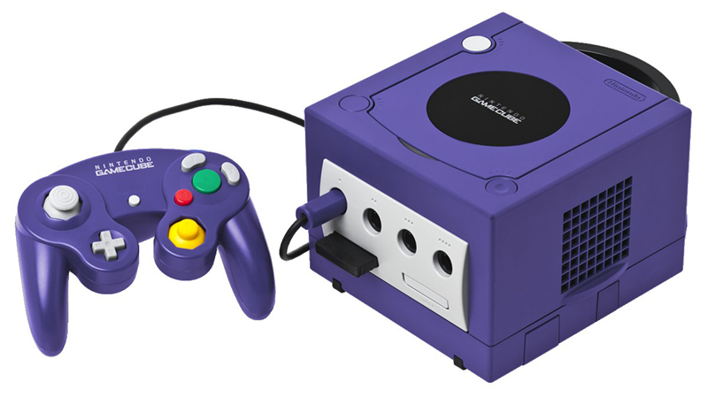

Nintendo: A evolução do videogame ao longo das décadas
Quando se fala em videogames, a Nintendo logo é lembrada. Em março do ano passado, a empresa japonesa lançou seu mais novo console, o Nintendo Switch, um híbrido entre videogame de mesa e portátil. Sucesso estrondoso de vendas, a novidade comercializou mais de 2 milhões de unidades só na primeira semana.
Uma das maiores forças da atualidade da indústria dos consoles, juntamente com o PlayStation (Sony) e o Xbox (Microsoft), a veterana possui uma série videogames lançados. Alguns fizeram grande sucesso e outros foram um fiasco. Conheça a trajetória da empresa japonesa que soube se reinventar no decorrer dos anos.
Nintendo 8 Bits (NES):
A Nintendo já havia produzido alguns jogos eletrônicos no Japão, mas em 1983 ela decidiu lançar seu próprio console, intitulado Famicom, chegando aos Estados Unidos em 1985, onde recebeu o nome de Nintendo Entertainment System (popularmente chamado NES e conhecido como “Nintendinho” no Brasil). Foi aí que nasceu os clássicos Super Mario Bros., The Legend of Zelda e Metroid – que continuam firmes com suas respectivas séries até os consoles atuais.
Game Boy
Game Boy: Seis anos depois, a Nintendo lançou o Game Boy, videogame portátil, que tornou-se uma febre, sendo um precursor dos games portáteis, trazendo uma novidade, o uso de cartuchos, deixando para trás o sistema com apenas um game na memória. Até hoje a Nintendo é pioneira em games portáteis lançando novas versões.
Super Nintendo (Super NES)
Naquela época, apesar de liderar em alguns países com o NES, a Nintendo encontrara uma concorrente de peso: O Mega Drive (1989) e seu mascote veloz, Sonic. Eis que nasce no ano seguinte o Super Nintendo, para bater de frente com o rival e revolucionar mais uma vez a indústria com Super Mario World, que até hoje é referência em mecânicas e conceito para jogos de plataforma.
Virtual Boy
Um dos, se não o maior fracasso da Nintendo. Com limitações técnicas, ele foi o primeiro videogame híbrido da empresa. Com traços de console portátil, o Virtual Boy era um visor que projetava imagens diferentes para cada olho, com a ideia de criar um efeito 3D para o jogador. Ao invés disso, foi proporcionada (literalmente) muitas dores de cabeça aos usuários. Seu lançamento foi em 1995.
Nintendo 64
Lançado em 1996, a empresa vinha passando por um período obscuro. No ano anterior, a Nintendo lançara o Virtual Boy, que foi um fracasso de vendas. Não só o fiasco do videogame anterior prejudicou o Nintendo 64. A escolha por cartuchos ao invés de CDs também foi outro contribuinte.
Com um número baixo de vendas, a veterana havia sido vencida pela novidade da Sony, o PlayStation e seu uso de CD-ROM como mídia de jogos, que tinha um custo menor e possuía mais espaço que os cartuchos do 64, possibilitando games com gráficos tridimensionais mais texturizados, um avanço para os jogos da época.
Game Boy Advance
Introduzido ao mercado em 2001, este videogame portátil era uma versão atualizada do Game Boy, com uma tela colorida e gráficos melhores que seu antecessor. Em 2003 ele passou por uma atualização (o Game Boy Advance SP), trazendo um novo design e com iluminação própria para a tela.
Nintendo Game Cube
O console de design único (leia-se estranho) e minimalista surgiu em 2001. Embora fosse visualmente simples, o cubinho roxo escondia muita potência, mas pecou em escolher uma mídia prioritária (GameCube Optical Disc ou MiniDVD) para lançar seus jogos, ajudando nas más vendas do console na época.
Nintendo DS
Apresentando conceitos novos, o Nintendo DS é um videogame portátil com tela dupla, sendo a tela inferior sensível ao toque. Lançado em 2004, ele carrega consigo o título de aparelho mais vendido em toda a trajetória da Nintendo. Em 2011, nasceu seu sucessor, o Nintendo 3DS, cuja novidade era o efeito 3D que podia ser visualizado sem óculos especiais.
Nintendo Wii e Nintendo Wii U
Após o sucesso do Nintendo DS, a empresa japonesa lançou em 2006 o Nintendo Wii, que focava num público mais casual e revolucionou a indústria com seus controles de movimento, sendo um sucesso de vendas com mais de 100 milhões de unidades vendidas.
Já o Nintendo Wii U teve seu lançamento em 2012 e não repetiu o mesmo sucesso de seu antecessor, por conta de problemas no marketing, que não deixava claro qual era a proposta do console, sendo confundido com um periférico do Nintendo Wii.
Possuindo um controle em formato de tablet, o GamePad trazia uma tela própria sensível ao toque, possibilitando vários tipos de interação, mas pouco usado por empresas terceiras, caindo em desuso e muitas vezes sendo utilizado somente como segunda tela ou para jogar sem necessariamente usar a TV.
Com seu pouco mais de 13 milhões de unidades vendidas, menos até que outro “fracasso” comercial, o Game Cube que vendeu pouco mais de 21 milhões de unidades. O Wii U saiu de cena mais cedo do que esperado, apenas quatro anos após seu lançamento, dando espaço ao próximo console da empresa, o Nintendo Switch.
Nintendo Switch
Lançado em março de 2017, o Nintendo Switch é a nova aposta da Big N para o mercado de consoles de mesa, mesmo sendo um híbrido de console portátil. O conceito era inovar e trazer ao usuário a mobilidade real de jogar seus games favoritos em qualquer lugar, conceito que foi timidamente usado no Wii U, mas que aqui é feito com maestria.
Sucesso de vendas, o Nintendo Switch já alcança a marca superior de 17 milhões de unidades vendidas, sendo o console mais vendido do Japão, superando também as vendas do Xbox One na Europa.
Os novos controles de movimento (Joy-Con), que em alguns jogos servem para dois jogadores; a possibilidade de se jogar tanto na TV (plugado na Dock) quanto na rua (modo portátil); o grande apoio de empresas terceiras como a Bethesda, Ubisoft e Capcom, além do seu lançamento com The Legend of Zelda e Breath of the Wild (que por si só trouxe novos conceitos para games de mundo aberto e ganhando vários prêmios de Jogo do Ano), fez com que o Nintendo Switch se tornasse o sucesso mais recente da empresa com apenas um ano de vida.
Será que ele terá fôlego para superar os números do Wii?
De grandes sucessos e alguns fracassos, a Nintendo ainda é a empresa que mais inova no mercado e ainda tem muito fôlego para continuar sendo referência na indústria, seja com seus consoles inovadores ou com seus games icônicos. As vésperas da E3 vamos ficar de olho na conferencia da empresa e todas suas novidades para os próximos grandes jogos.